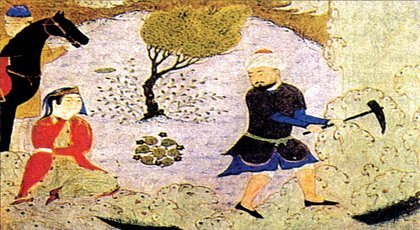

Hüsrev Ü Şirin

Sasani hükümdarlarından Hüsrev’in padişahlığı ve Şirin’le olan ilişkisi Şahname’de anlatılır. Bu konuyu bir aşk mesnevisi olarak işleyen ise Nizamî’dir. Nizamî, Şahname’deki tarihî olayların herkesçe bilindiği varsayımıyla Hüsrev’in aşkını hareket noktası almış, kahramanın öbür yönleri üzerinde fazla durmamıştır. Nizamî’nin Hüsrev ü Şirini İran edebiyatını olduğu kadar Türk edebiyatını da etkilemiştir. XVI. yüzyılda Hüsrev /Ferhad ile Şirin’in aşkını konu edinen on dört mesnevi kaleme alınmıştır.
Bu aşk hikâyesinin gelişiminde başka hiçbir mesnevide görülmeyen bir değişim söz konusudur. Hikâyenin aslında erkek kahramanı Hüsrev’dir. Celilî, ve Ahmed-i Rıdvan gibi kimi XVI. yüzyıl Osmanlı şairleri Hüsrev’in aşk kahramanı olarak işlendiği mesneviler kaleme almışlardır.
Ahmed-i Rıdvan’ın Hüsrev ü Şirini 6308 beyitlik oldukça hacimli bir mesnevidir. Şair, eserini yazarken hem Nizamî’nin hem de Şeyhî’nin eserinden yararlanmıştır. Kimi olayları verirken Nizamî’ye kimilerinde ise Şeyhî’ye uymuştur. Şeyhî’nin planını, bir iki nokta dışında aynen uygulamıştır. Hatta mesnevi içindeki gazellerden çoğu ve terci-bent Şeyhî’ye naziredir. Eserin konusu şöyledir:
İran şahı Hürmüz’ün Hüsrev-i Perviz adında bir oğlu olur. Küçük yaşta ok atmayı ve kılıç kuşanmayı öğrenir. Bir eğlence meclisinde nedimi, ona Ermen ülkesinin şahı Banu’nun yeğeni Şirin’in güzelliğini anlatır. Onun güzelliğini duyan Hüs- rev, âşık olur ve nedimi Şavur’u, Şirin’i büyüyle kendisine âşık etmesi için görevlendirir. Şirin, Hüsrev’in resmini görüp ona âşık olur. Resmi çizen ressamı aratan Şirin, Şavur’dan Hüsrev’in de kendisine âşık olduğunu öğrenir. Bunun üzerine Şirin, atı Şebdiz’e binip Hüsrev’in bulunduğu Medayin şehrine gitmek üzere yola koyulur. Yolda bir havuzda yıkanırken iki âşık birbirini görürler ama tanımazlar. Çeşitli sebeplerden dolayı bir süre daha kavuşamayan âşıklar, sonunda Ermen’de bir araya gelseler de bu kavuşma kısa süreli olur. Şirin’in Ermen’den ayrılmasıyla Hüsrev de Rum diyarına gelir. Bu sırada Behram’ın Hürmüz’ü öldürerek İran tahtını ele geçirdiğini öğrenir. Bunun üzerine Hüsrev’e yardım eden Kayser, ordu hazırlayarak Iran üzerine yürür. Savaşta Behram’ı yenerek Iran tahtını Hüsrev’e teslim eder. Şirin de kendi ülkesinin tahtına geçmiştir ama Hüsrev’in Meryem’le evlendiğini öğrendiği için gamlıdır. Bu hâldeyken sarayının bahçesine bir süt havuzu yaptırdığı Ferhad, Şirin’e âşık olur ve bu aşkla kendini dağlara vurur. Bunu öğrenen Hüsrev, Ferhad’ı çağırarak imkânsız bir görev olarak Bîsütun dağını delmekle görevlendirir. Bu durumu öğrenen Şirin, kendi aşkı uğruna bunca zorluğa göğüs geren Ferhad’ı görmeye dağa gider. Şirin’in meylini gören Hüsrev, Ferhad’ı ortadan kaldırmak için bir kocakarı bulup Ferhad’a Şirin’in öldüğünü söyletir. Bunun üzerine Ferhad üzüntüsünden dövünüp can verir. Ferhad’ın mezarı bütün halkın ziyaret ettiği bir türbe hâline gelir. Şirin de onun mezar taşını yaptırır. Bu arada Meryem de ölmüştür. Iki âşık birbirine mektupla baş sağlığı diler. Daha sonra da evlenirler. Hüsrev, tac ve taht hevesine düşen oğlu tarafından hançerlenerek öldürülür. Şirin de aynı hançerle kendini öldürür.
Fars edebiyatında XIV. yüzyıl şairlerinden Ârifî’den itibaren, Türk edebiyatında ise Ali Şir Nevayî’den sonra bazı mesnevilerde, asıl hikâyede yardımcı karakter olan Ferhad, hikâyenin asıl kahramanı hâline gelmiştir. XVI. yüzyıl divan şairlerinden Harimî, Lamiî ve Şanî, Ali Şir Nevayî’yi, dolayısıyla da Ârifî’yi örnek alarak Ferhad’ı asıl kahraman olarak işlemiştir. Lamiî’nin 5095 beyitlik Ferhad u Şirin veya Ferhadname isimleriyle bilinen mesnevisi Ali Şir Nevayî’nin aynı adlı eserinin çevirisi gibidir. Lamiî, mesnevisinde Ali Şir Nevayî’nin eserinde olduğu gibi, aşk kahramanı olarak Hüsrev’i değil Ferhad’ı ön plana çıkarmıştır. Kahraman değiştiği için olay örgüsünün de belli oranda değiştiği görülür. Değişim oranını ve değişen noktaları görebilmek için bunun da olay örgüsünü vermek yerinde olacaktır. Mesnevinin özeti şöyledir:
Çocuk hasreti çeken Çin hükümdarının, ettiği dualar neticesinde Ferhad isminde bir oğlu olur. Ferhad doğuştan kederli bir ruh hâline sahiptir. Babası onun bu hüzünlü hâli üzerinden atıp yaşam coşkusuyla dolması için bütün yolları dener. Dört adet köşk yaptırır ve burada eğlenceler düzenler ama bu eğlenceler de Ferhad’ın durumunu değiştirmez. Bunun üzerine hükümdar, Ferhad’a hazinesinin kapılarını ardına kadar açar. Ferhad burada, İskender-i Sanî’nin, bakanın kaderini gösteren aynasını görür. Aynanın sırrını çözmek için, aynanın arkasında yazılı olan bilgi notuna uygun olarak, babası ve bir orduyla birlikte Yunan topraklarına gider. Uzun bir yolculuktan sonra hedeflerine vardıklarında Süheyla isimli birinden aynanın sırrını bilen Sokrat’a giden yolu öğrenir. Ancak bu yol tehlikelerle dolu bir yoldur. Önce bir ejderhayla çarpışır, sonra da Ehrimen’le. Ferhad onların her ikisini de öldürür. Hızır’ın yardımıyla Cam-ı Cemşid’i bulur ve onun sayesinde Ehrimen’in kalesinin sırlarını çözer. Sonrasında yine bu kadehin de yardımıyla Sokrat’ı bularak ondan bildiği her şeyi öğrenir. Aynanın tılsımının nasıl bozulacağını da dinler. Ferhad ülkesine dönünce aynaya bakar ve orada gördüğü Şirin’e âşık olur. Bundan sonra sağlığı bozulan Ferhad’ın iyileşmesi için onu bir adaya götürmek isterler. Yolda fırtına çıkınca Ferhad denizde kaybolur. Ancak bir tahtaya tutunarak kurtulur ve Yemen’e giden bir gemiye sığınır. Gemide Şapur isimli bir ressam Ferhad’ın aynada gördüğü memleketi tanıdığını, isterse kendisini oraya götürebileceğini söyler. Uzun bir yolculuktan sonra söz konusu diyara gelirler. Orada Şirin’in şehrine su götürecek bir kanal açmak için dağı kazan insanlarla karşılaşırlar. Ferhad onlara yardım eder ve hemen o gün büyük başarı gösterir. Bunun üzerine hükümdar Mihin Banu ile Şirin dağa gelirler. Ferhad burada Şirin’i görür ve bayılır. Şirin de Şapur’dan onun hikâyesini öğrenir. Bundan sonra Ferhad âdeta aşkını ispatlamak istercesine uzun ve zorlu bir uğraş vererek su kanalını tamamlar. Başarısının ödülü olarak kendi adına bir ziyafet verilir. Ziyafette okuduğu şiirlerin etkisiyle Şirin’in bayılması, onun da Ferhad’a âşık olduğunu ortaya çıkarır. Bu noktadan sonra iki âşığın kavuşma süreci başlayacağı hâlde Hüsrev-i Pervîz isimli bir hükümdarın Şirin’e olan aşkı her şeyi değiştirir. Şirin’i elde edemeyen Hüsrev, Ermen’e savaş açar. Ancak Ferhad tek başına Hüsrev’in ordusunu bozguna uğratır. Hüsrev tekrar saldırır. Savaş sırasında Ferhad büyük kahramanlık gösterir. Ama hileyle yakalanarak sarp bir kaleye hapsedilir. Burada bir süre Şirin’le mektuplaşsa da Hüsrev’in haberdar olmasıyla bu yol da kapanır. Şirin’in mektubunu okuyan Hüsrev, Ferhad’ı öldürmeye karar verir. Bu iş için bir kocakarı bulur. Kadın, Ferhad’a Hüsrev’le Şirin’in evlendiğini söyler. Bu acıya dayanamayan Ferhad, başını taşlara vurarak ölür. Bunun üzerine Hüsrev, Şirin’i tekrar ister. Şirin, halkını tekrar zora sokmamak için bu sefer Hüsrev’le evlenmeyi kabul eder. İlerleyen süreçte Hüsrev’in oğlu Şîrûye, Şirin’i görüp ona âşık olur ve babasını öldürür. Bu kez de Şîrûye, Şirin’le evlenmek ister. Ancak bu teklifin kabul edilmesinin şartlarından biri olan Ferhad’ın naşının Şirin’e teslim edilmesidir. Bu şart üzerine Ferhad’ın naaşı getirilip Şirin’in odasındaki yatağa bırakırlar. Şirin de onun yanına uzanarak ruhunu teslim eder. Bütün bu olayları öğrenen Ferhad’ın babası, Hüsrev’in cesedini yaktırır ve onun ülkesine verdiği zararı oğlundan tahsil eder. Ülkenin başına Şâpûr’u getirerek kendisi tasavvuf yoluna girip inzivaya çekilir.